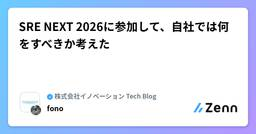

株式会社イノベーション Tech Blogのフィード
https://zenn.dev/p/innovation
業界最大級の法人向けIT製品比較サービス「ITトレンド」の運営会社、イノベーション開発チームの公式Tech Blogです！ 各記事の内容は個人の意見であり、企業を代表するものではございません。 note にも投稿しています！ https://note.com/inno_tech
フィード
月18万行のコーディングを走り切った話 3
3
株式会社イノベーション Tech Blogのフィード
タイトルの「月18万行」はリファクタリングに伴うコードの移動や削除も含んだ数字なので、生産性の指標としてはあまり参考になりません。キャッチーなのでタイトルに使いましたが、インパクト重視の数字だと思って読んでください。本記事で伝えたいのは行数ではなく、「AIをパンクさせないためには何を整えるべきか」 という話です。 はじめにこんにちは、ミッシーと申します。株式会社イノベーションでEMとして複数チームのマネジメントをしています。今回はITトレンドマネー/みんなのマネースコアの開発プロジェクトで、2ヶ月かかる想定だった機能をコードベースのリファクタリング込みで1ヶ月でリリースした際...
3日前

SRE NEXT 2026に参加して、自社では何をすべきか考えた 1
株式会社イノベーション Tech Blogのフィード
はじめにhttps://sre-next.dev/2026/初の大規模カンファレンスの参加でした。DAY1のみ参加しました。本記事は、お祭り的な楽しみ方ではなく現場で使える知見をもぎ取ることに集中して参加したレポートです。会場の雰囲気などは他の参加者の方の記事に委ねて、ここでは徹底的に真面目な考察を書きます。 参加理由「他社事例を鏡として自組織の現在地を炙り出し、明日からの具体的なアクションを決定する」 ために参加しました。他社でできているけどウチでできていないこと、逆にウチはできていること。できていないことはどう適用すれば理想なのかを知りたかったです。カンファレンス...
7日前

本は読んだだけでは身につかない。だから Claude Code の Skill にしよう
株式会社イノベーション Tech Blogのフィード
はじめに最近 Kaggle の「Pokémon Trading Card Game AI Battle Challenge」(通称ポケカABC)にはまっている、イノベーション新卒入社の中村友哉です。学生時代は機械学習や数理最適化を学んでいて、社会人になった今も分析の道に進みたいと思っています。ところで『問題解決』(高田貴久・岩澤智之)という本、読んだことありますか？https://www.amazon.co.jp/dp/4862761240僕は、入社をきっかけに入門書として手に取りました。読んだ直後は、素直に「なるほど」「これは使えそうだ」と思いました。ただ過去の経験上、本...
8日前
Claude Code の commands と skills で開発フローを整備した話
株式会社イノベーション Tech Blogのフィード
特定のプロジェクト（言語およびアーキテクチャのリプレイス開発）のフローを前提に組んでいた Claude Code の commands を、skills と役割分担しながら、複数のチームで使える形に整備し直した話です。「自分のチームのフローに最適化してコマンドを組んだら、他チームでは逆に使いにくくなった」——同じ経験をしている、あるいはこれからやりそうな人に向けて書きました。 整備前 ── リプレイス開発を前提に組んだコマンド群もともとこの仕組みは、リプレイス開発をスピーディに進めるために作ったものでした。仕様書を開発と並行して揃えたかったので、リプレイス前の実装を playbo...
1ヶ月前
【失敗談】大規模開発をして残ったのは技術負債だけだった話 〜作らないことの重要性〜
株式会社イノベーション Tech Blogのフィード
はじめに「この機能、本当に今作る必要がありますか？」エンジニアとして、この問いをビジネスサイドに投げかけることができているでしょうか。私はかつて、この問いを投げかけながらも、技術的なリスクを十分に言語化できないまま開発が進んでしまった経験があります。どうも、ITトレンドEXPOの開発リーダーをしていますTACこと三浦です。ITトレンドEXPOは、毎年春と秋に開催されるオンライン展示会プラットフォームです。展示会の開催日は絶対に動かせません。この制約が、私たちの開発に常に緊張感をもたらしています。本記事では、チーム賞を受賞した開発がどのように技術的負債へと変わっていったか。開...
2ヶ月前
クリーンアーキテクチャを3行で説明してみる
株式会社イノベーション Tech Blogのフィード
はじめにクリーンアーキテクチャって難しいですよね。最近ではソフトウェアアーキテクチャを考える上で クリーンアーキテクチャ は避けて通れません。ですが、クリーンアーキテクチャで設計しよう！となった時に、そもそもクリーンアーキテクチャとは... となることが多々あります。そこで、クリーンアーキテクチャについてざっくり3行でまとめてみようと思います。 モチベーションGo製のプロダクトのソースコードを眺めているGoでクリーンアーキテクチャ、というより抽象化とDIを伴うレイヤードアーキテクチャの類は過剰だ、と感じます。どうすると丁度いいのかといつも悩んでいて、それでいて全く答...
2ヶ月前
書き手の声を消さない、Zenn記事執筆サポートスキルを作った話
株式会社イノベーション Tech Blogのフィード
はじめにこんにちは！イノベーション開発チームのmiyaken85です！普段はITトレンドの開発をしつつ、エンジニア広報PJ活動もやらせてもらっています。弊社のエンジニア組織では、テックブログもあることだし、アウトプットをもっと活発にしていきたいところなのですが、いざ「じゃあZenn書こう」となると、書き始めるハードルって地味に高いって人も多いのかなと思います。なので、Zenn記事の執筆をサポートしてくれるClaude Skillを作ってみました。（弊社組織全体がClaudeを採用してるという背景もあります。）今回は、そのスキルを設計する中で結構迷ったポイントがいくつかあっ...
2ヶ月前
Storybook 10 と Vitest 4 へのアップグレードと、ビジュアルリグレッションテストの実践まとめ
株式会社イノベーション Tech Blogのフィード
はじめに以前に僕はこういう記事を出しました。https://zenn.dev/innovation/articles/e10e5b5842cf29あれから1年近く経ち、今やStorybookとVitestは、それぞれバージョン10と4になり、さらに向こうへPlus Ultraし続けています。（時の流れもバージョンの流れも同じくらい早いよフロントエンド）というか、キャッチアップが遅すぎたまである。https://storybook.js.org/blog/storybook-10/https://vitest.dev/blog/vitest-4ということで、今更ながらアッ...
4ヶ月前
AIエージェント並行開発を支えるgit worktree × Docker Compose環境構築
株式会社イノベーション Tech Blogのフィード
はじめにイノベーション開発チームのkuniです！現在はITトレンドのリプレイスPJに従事しています。AIエージェントを導入すると、複数のブランチで並列開発したいというシチュエーションがあると思います。git worktreeを使えば複数のブランチを同時にチェックアウトできるので、並列開発に適しています。ただ、プロジェクトをDockerコンテナ上で動かしている場合、開発環境の整備をしないと動作確認すらままならないですよね。この記事では、既存のDocker Compose設定を活かしながら、git worktreeを使って独立した開発環境を構築した方法を紹介します。!この記事...
5ヶ月前
【一次調査の自動化】Slack × n8n × Devinで、もう一人のドメインエキスパートを作ってみた
株式会社イノベーション Tech Blogのフィード
はじめにイノベーション開発チームの大野です！ITトレンドで開発マネジメント・QAをしています。エンジニアによる社内質問への対応工数の問題は弊社の各チームで発生しており、多くの開発チームが抱える一般的な課題だと思います。そこで、この課題を改善するために Slack × n8n × Devin を使って、一次調査の自動化を行いました！開発チームの課題感と、実際に使ってみて良かった・エンジニアの負担が軽減された・みんなに使ってもらえた、という内容をご紹介します。 課題ITトレンドでは、ユーザーやクライアントからの問い合わせに対してユーザーサポート・カスタマーサポートチームが...
5ヶ月前
AI時代、それでも私たちはコードを書きたい
株式会社イノベーション Tech Blogのフィード
!この記事の構成・執筆には、Google DeepMindのAdvanced Agentic Coding Assistant「Antigravity」を使用しています。 はじめに前回の記事「Antigravityにエンジニアリングの未来を見た」では、AIによってエンジニアの役割が「How (実装) 」から「What (要件) 」「Why (目的) 」へシフトしていくという話をしました。https://zenn.dev/innovation/articles/ce0f4b638fd86cAntigravityの開発体験が素晴らしすぎて書かずにはいられなかった記事なのですが...
6ヶ月前
GormのUpdatesメソッドでつまり散らかした話〜GormとBunの比較も〜
株式会社イノベーション Tech Blogのフィード
はじめにこんにちは！イノベーション開発チームのmiyaken85です！Goでバックエンド開発を行っている皆さん、データベース操作で予期しない動作に遭遇したことはありませんか?本記事では、GoのORMライブラリとして広く使われているGORMのUpdatesメソッドを使用する際に遭遇する、boolean型のfalse値や数値型の0などのゼロ値が更新されないという落とし穴について解説します。この問題は、GORMの仕様を理解していないと遭遇しやすく、実際に僕も開発中にハマってしまった経験があります。本記事を通じて、同じ問題で悩む方の助けになれば幸いです。本記事で学べること:...
6ヶ月前
Antigravityにエンジニアリングの未来を見た
株式会社イノベーション Tech Blogのフィード
!この記事の構成・執筆には、Google DeepMindのAdvanced Agentic Coding Assistant「Antigravity」を使用しています。 はじめにきっかけは、昨年の年末に妻から言われた一言でした。「なんかいいファミリーカレンダーアプリないかな？ 有名なやついくつか試したんだけど、どれも痒い所に手が及がないんだよね」帯に短し襷に長し。既存のアプリでは、我が家の運用に微妙にフィットしない。エンジニアなら誰もが一度は経験する「それなら自分で作った方が早いのでは？」という衝動に駆られる瞬間です。ただ、年末年始の休みを使ってゼロからコードを書くの...
6ヶ月前
翔泳社 サンプルコード365+1 Go言語サンプルコード解説 (Nostr)
株式会社イノベーション Tech Blogのフィード
概要こんにちは。株式会社イノベーションでSREをしています、発火大根です。全ページサンプルコードで出来ているカレンダー...という企画を翔泳社さんがやっていまして、Go言語でサンプルコードを書いて送ったところ、採用いただきました！やったぜ。この記事では、そのコードについて解説したいと思います。 対象読者ソフトウェアエンジニア、もしくはプログラミングに興味のある方Nostrを知らない方Nostrを知っているけど、これを機にNostrで何か作ってみたくなった方 コードと実行結果こちらが、そのカレンダーになります。Gistにもアップしています。(29行で...
7ヶ月前
E2Eテストでリリース後の動作確認を自動実行できるようにしたらストレスが減りました
株式会社イノベーション Tech Blogのフィード
はじめにイノベーション開発チームの大野です！ITトレンドで開発業務をしています。今回は、リリース後の不具合早期発見のために、手動実施していたテストをE2Eとして実装しました。品質保証やSREの観点で、どのように考えて具体化したかを残すべく記事にしました。 前提ITトレンドは、基本的に週1回リリースしています。リリース後に毎回、主要ページのアクセスができるか、CV機能が壊れていないかのテストを手動で実施していました。しかし手動でのテストには下記のような問題点があります。リリースのたびに時間がかかる担当者の仕様理解度によってテスト精度のバラつきがあるシンプルに面倒...
7ヶ月前
Goのスタックトレースは車輪の再発明を恐れずに
株式会社イノベーション Tech Blogのフィード
オリジナルのThe Go gopher（Gopherくん）は、Renée Frenchによってデザインされました。 はじめにGoで開発と運用を行っているとエラーログがやけにシンプルなことに気づきます。そう、 デフォルト状態ではスタックトレースがつかないのです。本番環境で障害が発生した時などにスタックトレースがあるとエラー原因の調査にとても役立ちます。Goの標準パッケージにはエラーログにスタックトレースを付加できる機能がないので、便利なパッケージがないか探してみました。 最初に結論エラーにスタックトレースを付加する機能を持つパッケージはたくさんありますが、様々な理由で自...
7ヶ月前
ノートを「知識」ではなく「思考」として扱う ── Zettelkastenという考え方
株式会社イノベーション Tech Blogのフィード
はじめに本や動画、記事からたくさんインプットするでも情報が積み上がるだけで、繋がらないそして数日後、こう思う「あれ…これ前にも学んだ気がするけど、どこに書いたっけ？」この状況を何度も繰り返す中で、どうすれば、インプットした内容を思考として積み上げられるのかを考えるようになりました。その中で「Zettelkasten（ツェッテルカステン）」という手法に出会いました。これは単なるノート術ではなく、「思考そのものを育てるための仕組み」だと知り、自分なりに理解を整理してみることにしました。 Zettelkasten（ツェッテルカステン）とは？「思考のネットワークを...
7ヶ月前
データ可視化向けSSG「Observable Framework」のプロジェクト作成〜 GitHub Pages で公開するまで
株式会社イノベーション Tech Blogのフィード
はじめに この記事は何？この記事では、Observable Framework のプロジェクトを作成し、GitHub Pages で公開するまでの手順をまとめました。詳細は 公式ドキュメント をご覧ください。※本記事の内容は執筆時点のもののため、うまくいかない場合は最新情報をご確認ください。 対象読者Observable Framework を試してみたい人データ可視化を目的とした静的サイトを作って公開したい人英語の公式ドキュメントを読むのが億劫、またはある程度の手順がわかれば十分な人 Observable Framework とは？Observable...
8ヶ月前
MCPサーバーを立ててAIがPostgreSQLを参照できるようにしてみた話
株式会社イノベーション Tech Blogのフィード
!この記事は2025年9月17日時点の情報です。MCP公式は活発に更新が行われているため、この記事の内容そのままでは動作しない可能性があります。2025年10月1日にMCP公式go-sdkの正式バージョンとして v1.0.0 が公開されました。本記事記載のソースコードのまま変更なしでビルドできたので内容はそのままで公開します。 はじめにこんにちは。マーケティングオートメーションツール「ListFinder」開発チームのはちです。普段はデータ加工や外部システムとのデータ連携処理などをGo言語で書いています。弊社では生成AIの活用を推進しており、AIエージェントの Dev...
9ヶ月前
開発効率がUPするリファクタリング術！メンテナンス性を劇的に改善した「抽象化」設計とは
株式会社イノベーション Tech Blogのフィード
はじめにこんにちは！イノベーション開発チームのm_satoです☺️これまで弊社サービスのbizplayでは、サービスごとに処理が独立して書かれていたため、似たようなコードが量産されていました。新しいサービスを追加するたびに類似機能であっても同じような実装をコピーして…という感じで、正直メンテナンス性が低い状態でした・・・。そこで今回！！新たにサービスを追加する機会があったので、思い切ってリファクタリングに踏み切ることにしました！✨この記事では、この課題を解決するために、インターフェースを用いて処理を「抽象化」し、依存関係を整理することで、いかにして変更に強く、保守性の高い...
1年前